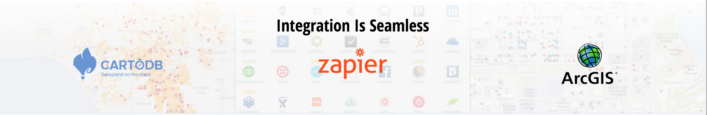

Your presenters


- Web Maps 101
Great map, but...

not a Web Map...
NYTimes Census Race Map
Web maps have these common elements:
- A map
- Functionality to interact with the map
- A user interface

Who was involved in creating web maps?
Let's travel back to 1990s...
In 1996, MapQuest introduced the first popular web map
MapQuest

It was like a road map and yellow pages combined. Its primary purpose was to find places and get directions.
Yahoo

In 2005, Google released their version of the web map

Google Maps became more popular than MapQuest because the maps were faster
The maps were faster because of Google's use of map tiles
And Google also made its technologies available to developers through an API
Fast Forward to Today...
Open source tools and libraries are gaining popularity
Leaflet CartoDB Mapbox GitHub KML GeoJSON CSV WMS Tiled OpenStreetMap Vector Tiles UTFGrid JavaScript HTML CSS Node.js Grunt MapQuest ExtJS PostgreSQL PostGIS SQL Server Bootstrap TileMill QGIS Maki Heroku EC2 S3 Zoomify jQuery Jasmine GDAL
Web map components
Basemap
A map that provides geographic context to help support a wide variety of overlays- typically raster tiles.
Basemaps are Tiles
Map Tiles
Pre-rendered images (tiles) that fit seamlessly together in geographic space in order to make maps load quickly.
Map tiles are 256x256 pixels and organized based on coordinates (x,y) and zoom levels (z).

Zoom Level
Defines the scale of the current map view. Ranges from 0 (entire world) to 21 (individual building level).


http://tile.openstreetmap.org/17/27306/49738.png
tile server zoom level x/y of tile in the grid
image format of the tile
Basemaps are available from many sources:
- Free: OSM, Stamen, Mapbox, CartoDB
- Paid: Google, Bing, Noki/Here, ESRI
- Custom: Mapbox, ESRI
 Openstreetmap.org
Openstreetmap.org
 Mapbox.com
Mapbox.com

Overlays
Themes of information overlaid on a basemap that help tell a story - typically vector.
Data + Location + geometry = Geospatial data
There are a variety of data formats for overlays
GeoJSON
{
"type": "FeatureCollection",
"features": [
{
"type": "Feature",
"geometry": {
"type": "Point",
"coordinates": [
-104.987825,
39.7414659
]
},
"properties": {
"name": "Modworks Coworking",
"address": "110 16th St #1300, Denver, CO 80202",
"site": "http://www.modworks.com/"
}
},
{
"type": "Feature",
"geometry": {
"type": "Point",
"coordinates": [
-104.986191,
39.7589209
]
},
"properties": {
"name": "Green Spaces",
"address": "1368 26th St, Denver, CO 80205",
"site": "http://www.greenspaces.com/"
}
}
}

JavaScript libraries!
Leaflet
A modern open-source JavaScript library for mobile-friendly, interactive web maps.
var map = L.map('map', { center: [12.99766, -84.90838], zoom: 5 });
Leaflet Plugins
var map = new L.Map('map_canvas', { center: [0,0], zoom: 2 });
L.mapbox.accessToken = 'Access Token';
var map = L.mapbox.map('map', 'mapbox.streets').setView([40, -74.50], 9);
var NPMap = { center: { lat: 39.37, lng: -105.7}, div: 'map'};
Bootleaf
The future is exciting...
... we now have vector tiles
How do I get started?
Planning a web map
- What is the purpose of the map?
- Where can I get the data?
- Will the map be queried for additional information?
- Will the map be viewed on multiple devices?


www.github.com/nationalparkservice
Planning a web map
- What is the purpose of the map?
- Where can I get the data?
- Will the map be queried for additional information?
- Will the map be viewed on multiple devices?

Offline
Record Linking
Calculated Fields
Webhooks
Integrations
Using CartoDB you can:
- easily overlay data onto a map
- analyze the data to reveal spatial patterns
- tell stories by creating beautiful visualizations
- and then easily share them with the world!

CartoDB combines:
- the power of PostGIS and SQL
- CartoCSS for map styling
- Mapnik for tile rendering
- Leaflet for the viewing interface
These technologies are all packaged into one easy to use online interface.
Demo!
Resources
- http://maptime.io/lessons-resources/
- mapschool.io